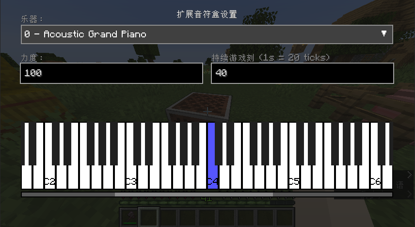
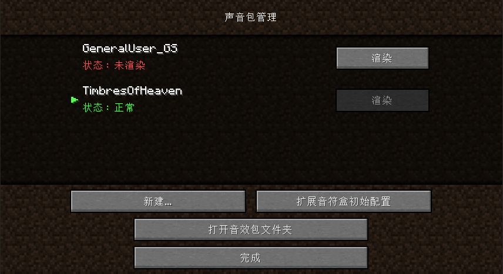

**Extended Note Block** 是一个专为 Minecraft Fabric 平台设计的模组，它为游戏引入了全新的音乐创作体验。该模组添加了一个功能强大的**扩展音符盒 (Extended Note Block)** 方块，将原版简单的音符系统升级为完整的音乐制作工具。
✨ 核心功能
- **独立音符盒方块**: 本模组提供了一个全新的"扩展音符盒"方块，配备专用的图形用户界面，与原版音符盒系统完全独立运行。
- **完整的 General MIDI 乐器库**: 支持全套 128 种标准 MIDI 乐器，涵盖从经典钢琴、弦乐器组到现代合成音色的全部音色范围，通过直观的下拉菜单进行选择。
- **可视化钢琴键盘界面**: 提供涵盖 128 个琴键的可滚动钢琴界面，支持从 C-1 到 G9 的完整音域范围，实现精确的音高选择，告别传统的重复点击操作。
- **专业级音符控制参数**:
- **力度控制 (Velocity)**: 精确调节音符演奏强度，直接影响音量表现。
- **延音设置 (Sustain)**: 以游戏刻为单位设置音符持续时间，支持长音符和琶音效果的制作。
- **基于 SoundFont 的自定义音频引擎**:
- 模组本身不包含预置音频文件，采用高效的 **SoundFont (.sf2)** 技术动态生成所有乐器声音。
- 默认集成高品质的 **GeneralUser GS** 音源库，可免费分发使用。
- 支持用户导入自定义 `.sf2` 文件，实现完全个性化的音色定制。
📸 界面展示


⚙️ 工作原理说明
Extended Note Block 采用了与传统模组不同的音频处理方式，通过独特的**一次性生成机制**创建游戏所需的音频资源。
- **SoundFont 技术**: 使用包含乐器采样数据的 `.sf2` 格式文件作为音源基础。
- **外部音频工具集成**: 模组将引导您配置两个专业音频处理工具：
- **FluidSynth**: 高性能数字音频合成器，负责音频合成处理。
- **FFmpeg**: 多媒体框架工具，负责将音频转换为 Minecraft 兼容的格式。
- **自动资源包生成**: 配置完成后，模组将自动调用上述工具，为每个音符和乐器组合生成对应的 `.ogg` 音频文件，并自动打包资源包。
💾 安装要求与步骤
**系统要求**: Fabric Loader 和 Fabric API
**安装步骤**:
- 确保已正确安装 Fabric Loader。
- 下载并安装 Fabric API，将其放置在 `mods` 目录中。
- 下载最新版本的 **Extended Note Block** 模组文件，放置在 `mods` 目录中。
- 启动游戏以完成安装。
使用指南
-
使用教程 >
详细介绍如何安装配置所需工具、渲染设置以及乐器映射关系
🤝 项目贡献
我们欢迎并鼓励社区成员为项目发展贡献力量。如发现程序缺陷或有功能改进建议，请通过 Issues 页面提交反馈。
📜 开源协议
本项目采用 MIT License 开源协议发布。
🙏 特别致谢
- **Fabric 开发团队** - 感谢提供优秀的模组开发平台。
- **S. Christian Collins** - 感谢创作并开源分享高质量的 GeneralUser GS SoundFont 音源库。
- **FluidSynth** 与 **FFmpeg** 项目的全体开发者 - 感谢提供强大的开源音频处理工具。
❗ 温馨提示
不要轻易阅读本仓库中的代码。
本仓库中含有大量 AI 生成的代码和注释，部分代码仅被验证功能可用，未经仔细核查。
本页面内容使用了 AI 工具辅助创作。